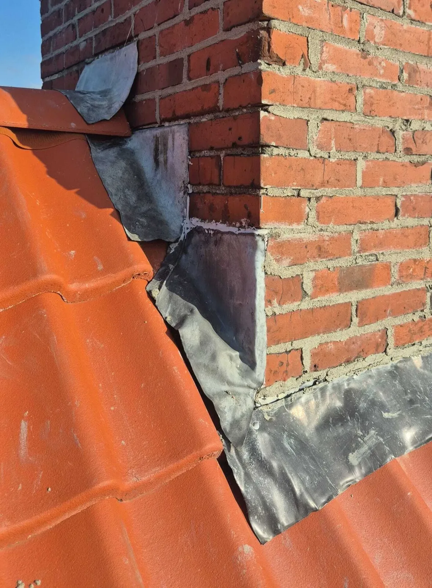
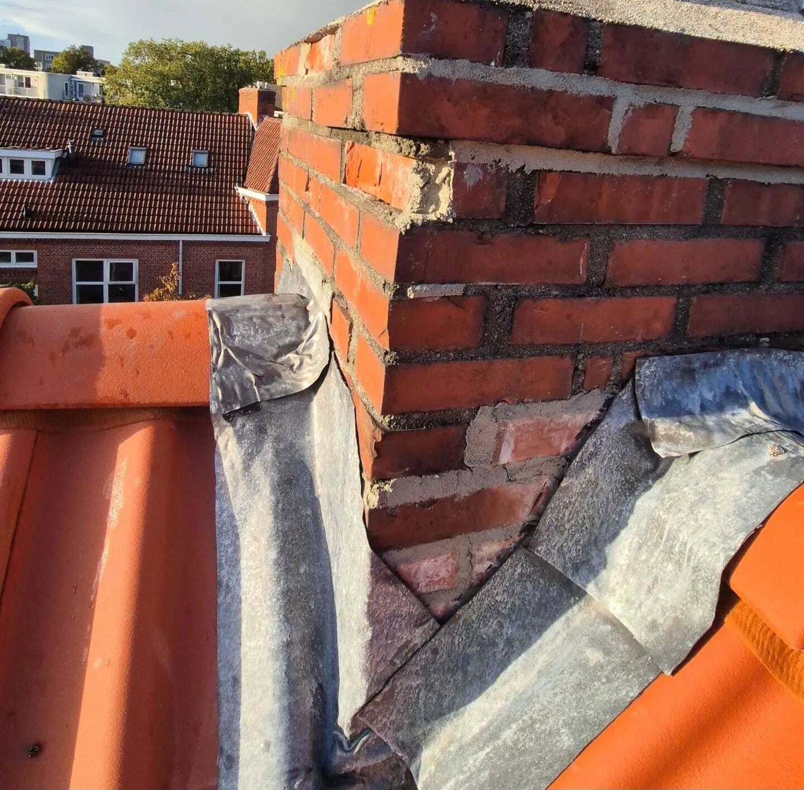
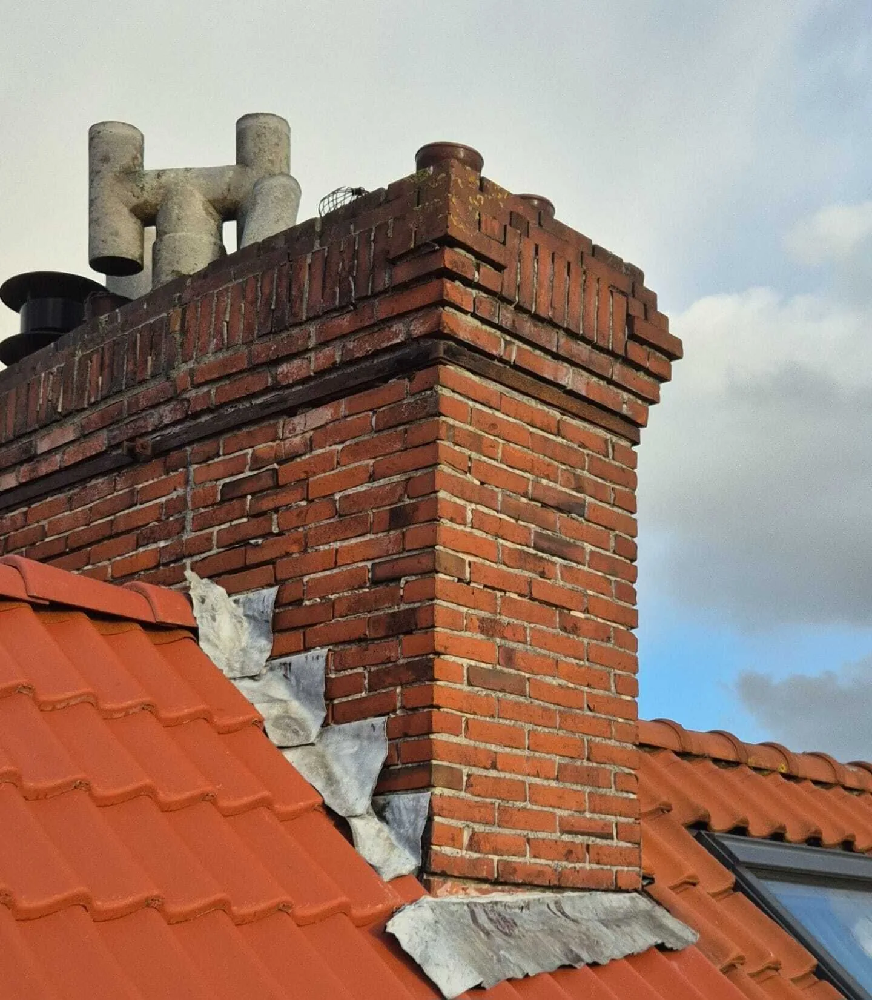

Verkeerd aangebracht lood
Lood is niet (diep genoeg) ingeslepen, verkeerd geklopt of met te weinig overlap geplaatst.
Een lekkage rond de schoorsteen begint vaak onschuldig: een vlek op het plafond, wat vocht in de schouw of een muffe geur. Juist deze plek is technisch kwetsbaar. Metselwerk, lood en dakbedekking komen hier samen, en kleine bewegingen door wind en temperatuur zorgen ervoor dat afdichtingen langzaam hun spanning verliezen.
Water vindt dan een route die je binnen pas veel later ziet. Daardoor lijkt de schade vaak “plotseling”, terwijl het detail al langer verzwakt is. En omdat vocht zich onder pannen, onderdakfolie of langs metselwerk kan verplaatsen, zit de zichtbare plek binnen zelden precies bij de ingang. De slimste route is daarom bijna altijd: eerst oorzaak vaststellen, daarna pas gericht herstellen.

Schoorstenen werken anders dan het dakvlak. Ze warmen sneller op, koelen sneller af en krijgen veel windbelasting. Daardoor ontstaan microbewegingen tussen metselwerk, lood en dakbedekking. Regen wordt bij bepaalde windrichtingen naar binnen gedrukt en kan zich langs lagen verplaatsen voordat het binnen zichtbaar wordt.
Lood is niet (diep genoeg) ingeslepen, verkeerd geklopt of met te weinig overlap geplaatst.
Wind trekt aan het lood; scheuren en open naden geven water direct toegang achter de aansluiting.
Haarscheuren en poreuze voegen zuigen vocht op en laten het langzaam doorslaan.
Kit/bitumen “pleisters” lossen de oorzaak niet op en verplaatsen vaak de waterroute.
Belangrijk: De plek van de vlek is zelden de plek van de oorzaak. Water kiest de makkelijkste route en komt soms meters verderop pas tevoorschijn.
Een van de meest voorkomende oorzaken van schoorsteenlekkage is verkeerd aangebracht lood. Loodwerk rond een schoorsteen is detailwerk: het moet correct worden ingeslepen in het metselwerk, goed worden aangeklopt, op de juiste plekken worden vastgezet en vooral: met voldoende overlap en de juiste “waterweg” (zodat water altijd óver het lood naar buiten wordt geleid).
In de praktijk zien we dat dit in de dakdekkerswereld regelmatig misgaat bij partijen die niet gespecialiseerd zijn in looddetails. Het lood wordt dan te oppervlakkig ingeslepen, verkeerd gefixeerd of “vlak tegen” het metselwerk gezet zonder correcte sluiting. Dat oogt aan de buitenkant soms prima, maar technisch ontstaat er een kleine opening waar water achter kan kruipen — en dan verplaatst het zich via metselwerk of daklagen naar binnen.
Veelvoorkomende fout: lood zonder juiste inslijping/overlap. Dat is vaak de reden dat lekkage na een “reparatie” juist terugkomt.
Vaak zie je open naden, losse randen, kitnaden als “afdichting”, of lood dat niet strak aansluit op metselwerk/pannen.
Omdat het pas bij slagregen/winddruk misgaat. Water kruipt achter het lood en wordt binnen later zichtbaar.
Lood correct vernieuwen: inslijpen, kloppen, fixeren, juiste overlap/afwatering — en aansluitingen rondom controleren.


Loshangend lood is één van de duidelijkste routes voor lekkage. Wind kan het lood optillen en water achter de aansluiting duwen. Ook verliest lood door ouderdom flexibiliteit, waardoor er scheuren en open naden ontstaan. Dan zie je binnen vaak vochtplekken rond de schouw of op aangrenzende wanden.
In zulke gevallen is “bijwerken” zelden genoeg: je wil het detail weer technisch correct opbouwen. Vaak hoort daar ook controle bij van het metselwerk, het loketwerk en de aansluiting met dakpannen of dakbedekking.
Het slimste traject bij schoorsteenlekkage is meestal: (1) bepalen waar water binnenkomt, (2) verklaren waarom het detail faalt, (3) kiezen voor duurzaam herstel. Als de oorzaak onduidelijk is, helpt lekkage opsporen. Als je bewijs nodig hebt (VvE/verzekering/aankoop), is een rapportage dakinspectie logisch.
Wanneer treedt het op (wind/regen)? Waar zie je het binnen? Zijn er eerdere reparaties gedaan?
Lood, voegen, loketten en aansluiting dakbedekking controleren. Waterroute begrijpen.
Bij VvE/verzekering: bevindingen, oorzaak en beoordeling vastleggen in rapportage.
Correct detailwerk: lood/voegen/aansluiting opnieuw opbouwen zodat water geen route meer vindt.
Tip: Als lekkage “alleen bij bepaalde windrichting” optreedt, is dat vaak een aanwijzing voor een opening aan één zijde van de schoorsteen.
Omdat water zich onder lagen kan verplaatsen (folie/latten/metselwerk). De vlek is vaak het einde van de route, niet het begin.
Als je binnen schade ziet maar de ingang onduidelijk is. Dan voorkom je repareren op aannames.
Meestal niet. Zonder correct looddetail en juiste overlap blijft het een zwak punt en keert lekkage vaak terug.
Als metselwerk/voegen én aansluiting samen falen of slijtage vergevorderd is. Dan is renovatie vaak de duurzaamste route.
Ja: met een rapportage dakinspectie leg je bevindingen, oorzaak en advies objectief vast.
Een schoorsteenlekkage is zelden een losstaand probleem. Door eerst de oorzaak te laten vaststellen, daarna (indien nodig) bewijs vast te leggen en pas vervolgens correct te herstellen, voorkom je dat je blijft repareren op de verkeerde plek.